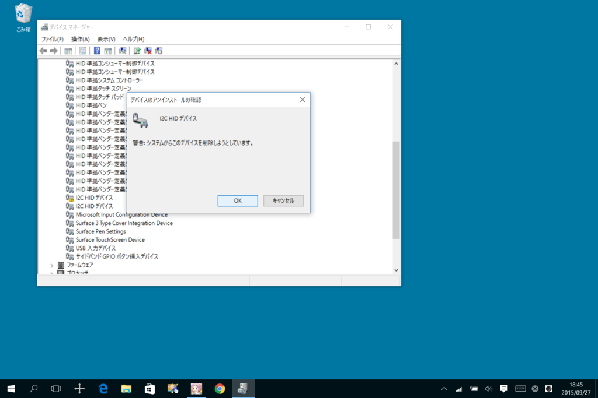

Surface 3 の動作が遅くなる・音が割れる・TypeCover でキー入力とタッチバッド入力ができなくなる
公開日：
症状

- Surface 3 の動作が遅くなる（「タスク マネージャー」や「リソース モニター」をみると“System”と“システムの割り込み”が異常に CPU を食っている）
- 音が割れる
- 急に TypeCover でキー入力とタッチバッド入力ができなくなる

［スタート］ボタンのコンテキストメニュー（右クリックメニュー。このメニューには［Win］＋［X］キーでアクセスすることも可能）から「デバイス マネージャー」を開く。

すると、「I2C HID デバイス」にビックリマークがついている。
解決

コンテキストメニューから「I2C HID デバイス」を削除して、Windows を“完全に”シャットダウンする。Windows を完全にシャットダウンするには“高速スタートアップ”を無効化すればよいが、このケースの場合は Windows の操作が困難だと思われるので、ツー ボタン シャットダウンをお勧めする。
Surface で Windows が応答しない
- 手順 1: 画面の右端から内側にスワイプして、[設定] をタップまたはクリックします。次に [電源] をタップまたはクリックし、[シャットダウン] をタップまたはクリックして Surface をシャットダウンします。通常の手順で Surface をシャットダウンできない場合は、Surface の電源ボタンを 30 秒間押し続けます。
- 手順 2:Surface をシャットダウンした後、Surface の音量を上げるボタンと電源ボタンを同時に押し、そのまま 15 秒以上押し続けてから、両方のボタンを離します。
- 手順 3: 画面に Surface ロゴが短時間表示される場合がありますが、両方のボタンを少なくとも 15 秒間は押し続けてください。
- 手順 4: ボタンを離した後、10 秒間待ちます。
- 手順 5: 再度電源ボタンを押して離し、Surface の電源を入れます。
起動して「デバイス マネージャー」を開き、「I2C HID デバイス」のビックリマークがなくなっていたら解決。
もし解決しない場合は、落ち着いて手順を正確に繰り返してみよう。それでもダメならば、製造元に問い合わせ。
関係ないかもだけど

9月に入って部屋のエアコンを切ってから、どうも Surface 3 の調子があちこち悪い。熱暴走したんかなぁ？
追記（2015/09/28 12:00）
しばらくしたらまた「I2C HID デバイス」が動作しなくなったので、今度は無効化。このまま使ってみる。
追記（2015/10/01 10:00）
あきらめて Windows 8.1 に戻して解決？ かも。